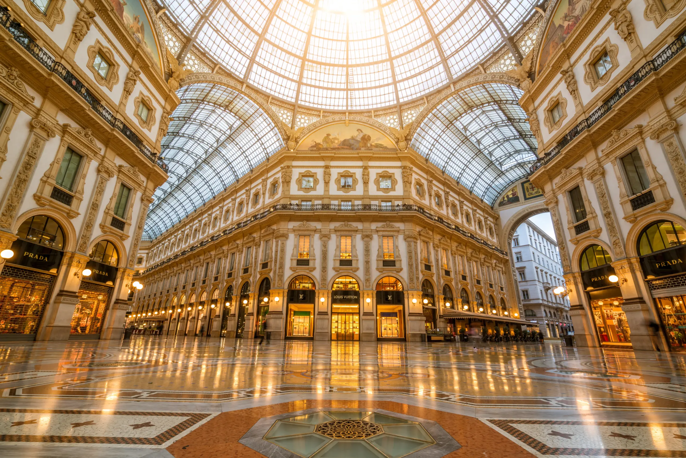
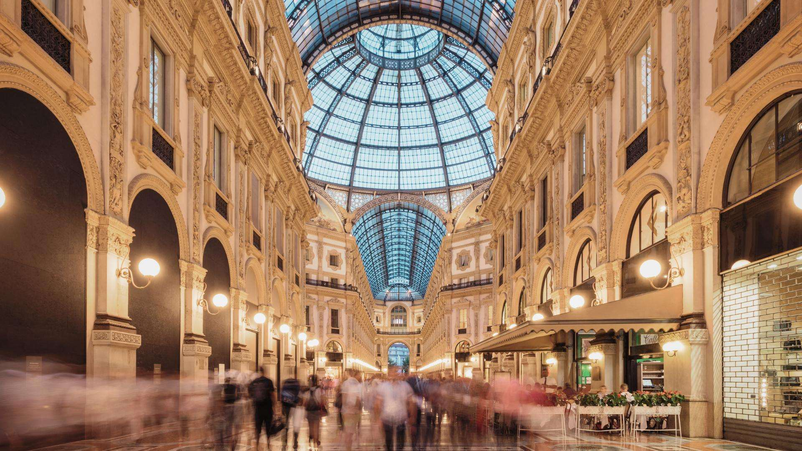
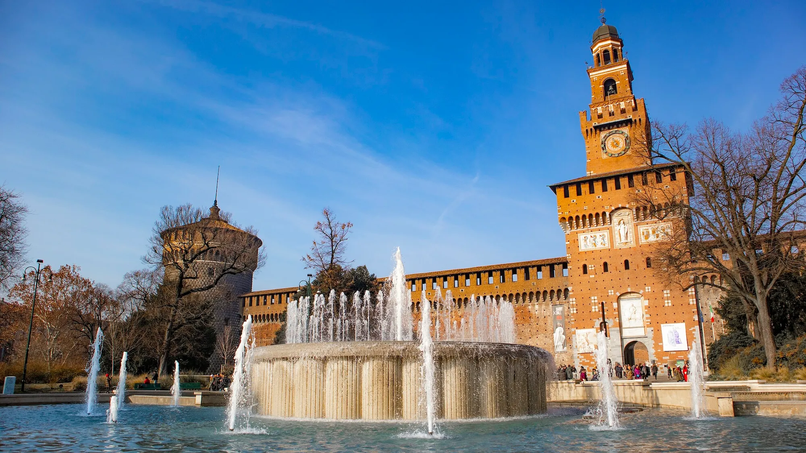

Fashion Capital
As a global fashion capital, Milan hosts the famous Milan Fashion Week, setting trends for the entire world.
The capital of fashion and culture in Northern Italy, where ancient history meets modern vitality.
Founded around 600 BC by Celtic tribes, Milan later became the important Roman city of Mediolanum. After being destroyed by Frederick I in the Middle Ages, the Milanese formed the Lombard League to fight back and win their independence, eventually becoming a duchy. Ruled by the Visconti family from the 14th century, Milan was established as a center for finance and trade. It flourished during the Renaissance, when Leonardo da Vinci painted "The Last Supper" here. In the 19th century, it became a pivotal hub for the Italian unification movement.

As a global fashion capital, Milan hosts the famous Milan Fashion Week, setting trends for the entire world.
A cherished local tradition from 6-8 PM, where bars offer rich buffets with drinks, blending social life with dining.
Home to world-renowned authors like Alessandro Manzoni and the legendary La Scala Opera House, Milan has a rich artistic soul.

A breathtaking example of Gothic architecture. Climb to the top of its spires for a panoramic view of the city.

Adjacent to the Duomo, this is one of the world's oldest and most luxurious shopping arcades, a masterpiece of 19th-century design.

A grand medieval fortress that now houses several civic museums and art collections, including works by Michelangelo.